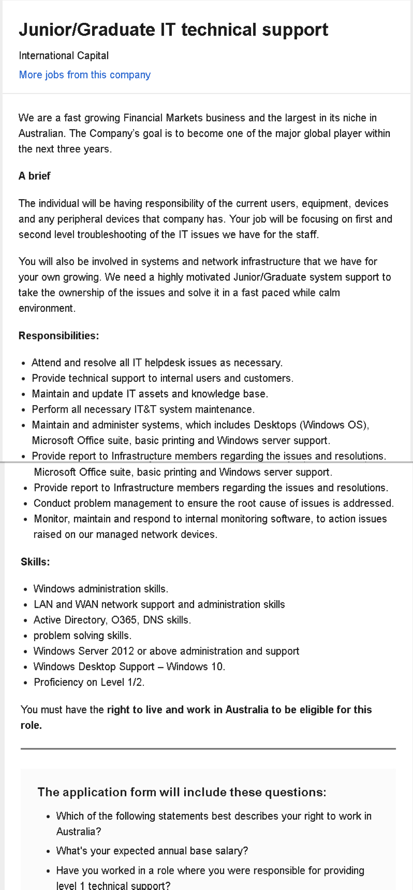

Hello everyone, welcome everyone to my webpage, let me introduce myself here briefly, I am Zijie Luo from China, you can also call me Damon, now I am studying at RMIT University, majoring in IT courses, my students number is s3809908 and the email address is s3809908@student.rmit.edu.au. If you want to make friends or have any questions, you can contact me via this email address.
In fact, I have a small hobby that I especially like cats. I have three cats in China. After I came here, I also have two cats at home. I think cats are good friends of human beings. Getting along with them can make our lives full. pleasure.
1.I am interested in IT because IT is like a magical tool that allows me to communicate with my computer through code. Another important reason is that society is now more and more dependent on the Internet, so learning IT is very helpful for my future personal employment. I started to be interested in IT when I first started to contact the Internet, so I decided to start learning IT at college and be able to help others through the knowledge I learned.
2.The reason why I chose to study IT at RMIT is very important. It is also a point that RMIT is different from other schools. RMIT is a very practical school. Most other schools may be more theoretical, but IT. It takes a lot of practice to master, so RMIT is definitely a good school to learn IT.
3.During my studies at RMIT, I hope to learn computer languages such as JAVA, C+. These languages can help me write my own programs in the future. A good program can usually facilitate people's lives. If I make the program later, Being able to help people, the years of studying at RMIT will be a significant time in my life.
The links and images below are the ideal jobs I feel, https://www.seek.com.au/job/39710936?searchrequesttoken=b2da2bc2-5566-4254-8ae9-d412a88ae461&type=standout.
Text paragraph
Text paragraph
Text paragraph
Text paragraph
etc etc etc